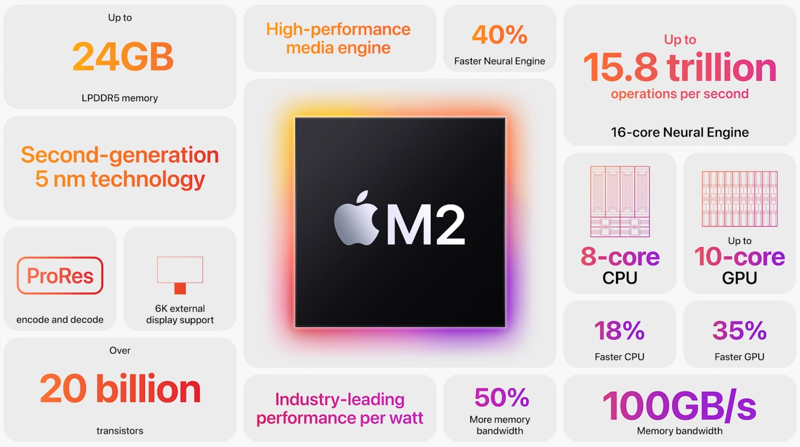

M1 (M2) - это не центральный процессор, это система специализированных процессоров на одной кремниевой пластине.
Вместо множества ядер общего назначения, чип М1 внутри содержит:
- Центральный процессор CPU - “мозги” системы на чипе. Выполняет большинство задач компьютера и программ
- Графический процессор GPU - используется в обработке графики и изображения, в том числе и в играх.
- Блок обработки изображений ISP - используется для увеличения производительности во время работы приложений по обработке графики.
- Обработчик цифровых сигналов (digital signal processor, DSP) - Выполняет более сложные математические функции, чем центральный процессор, включая декомпрессию музыкальных файлов.
- Блок нейронной обработки (Neural processing unit, NPU) - используется в топовых смартфонах, чтобы ускорить работу машинного обучения и AI.
- Кодировщик видео (Video encoder/decoder) - для энергоэффективного преобразования видео разных форматов.
- Блок безопасности (Secure Enclave) - шифрование, аутентификация и безопасность.
- Блок единой памяти (Unified memory) - позволяет модулям чипа взаимодействовать максимально быстро.